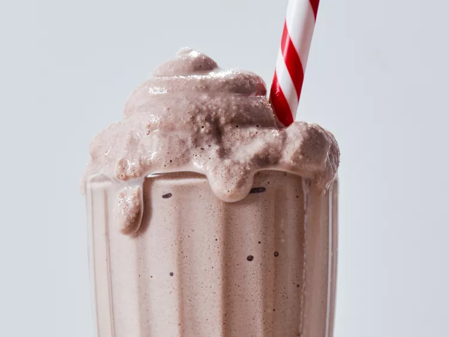

Wendy's Chocolate Frosty

Description :
Wendy’s Frosty fans, look no further. We tried a viral DIY version of the frozen favorite, and it’s well worth giving a spin—no ice cream machine needed.
Prep Time:
10 mins,
Freeze Time:
4 hrs,
Total Time:
4 hrs 10 mins,
Servings:
2,
Yield:
2 frosties
Ingredients :
- 2 cups chocolate milk
- 1 cup frozen whipped topping (do not thaw)
- 1/4 cup whole milk
- 1 tablespoon sweetened condensed milk
Steps :
- Pour chocolate milk into ice cube trays and freeze until solid, at least 4 hours and up to 24.
Process frozen milk cubes, frozen whipped topping, whole milk, and sweetened condensed milk in a food processor until smooth. Serve immediately or freeze in an airtight container up to 1 week.
Editor's Note :
For easier blending, transfer frozen milk cubes to a zip-top bag, then pound with a meat mallet or rolling pin into small pieces.